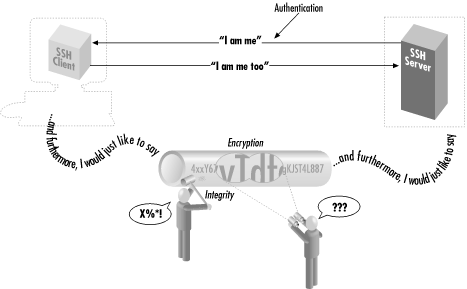

1.3. The SSH Protocol
SSH is a
protocol,
not a product. It is a specification of how to conduct secure
communication over a network.
[2]
The SSH protocol covers authentication, encryption, and the integrity
of data transmitted over a network, as shown in
Figure 1-2. Let's define these terms:
- Authentication
- Reliably determines someone's identity. If you try to log into
an account on a remote computer, SSH asks for digital proof of your
identity. If you pass the test, you may log in; otherwise SSH rejects
the connection.
- Encryption
- Scrambles data so it is unintelligible except to the intended
recipients. This protects your data as it passes over the network.
- Integrity
- Guarantees the data traveling over the network arrives unaltered. If
a third party captures and modifies your data in transit, SSH detects
this fact.

Figure 1-2. Authentication, encryption, and integrity
In short, SSH makes network connections between computers, with
strong guarantees that the parties on both ends of the connection are
genuine. It also ensures that any data passing over these connections
arrives unmodified and unread by eavesdroppers.
1.3.1. Protocols, Products, Clients, and Confusion
SSH-based products -- i.e.,
products that implement the SSH protocol -- exist for many flavors
of Unix, Windows, Macintosh, and other operating systems. Both freely
distributable and commercial products are available. [
Section 13.3, "Table of Products"]
The first SSH product, created by Tatu
Ylönen for Unix, was simply called
"SSH." This causes confusion because SSH is also the name
of the protocol. Some people call Ylönen's software
"Unix SSH," but other Unix-based implementations are now
available so the name is unsatisfactory. In this book, we use more
precise terminology to refer to protocols, products, and programs,
summarized in
the sidebar "Terminology: SSH Protocols and Products", In
short:
- Protocols are denoted with dashes: SSH-1, SSH-2.
- Products
are denoted in uppercase, without dashes: SSH1, SSH2.
- Client programs are in lowercase: ssh,
ssh1, ssh2, etc.
Terminology: SSH Protocols and Products
- SSH
- A generic term referring to SSH protocols or software products.
- SSH-1
- The SSH protocol, Version 1. This protocol went through several
revisions, of which 1.3 and 1.5 are the best known, and we will write
SSH-1.3 and SSH-1.5 should
the distinction be necessary.
- SSH-2
- The SSH protocol, Version 2, as defined by several draft standards
documents of the IETF SECSH working group.[Section 3.5.1, "Protocol Differences (SSH-1 Versus SSH-2)"]
- SSH1
- Tatu Ylönen's software implementing the SSH-1 protocol;
the original SSH. Now distributed and maintained (minimally) by SSH
Communications Security, Inc.
- SSH2
- The "SSH Secure Shell" product from SSH Communications
Security, Inc. (http://www.ssh.com). This is a commercial
SSH-2 protocol implementation, though it is licensed free of charge
in some circumstances.
- ssh (all lowercase letters)
- A client program included in SSH1, SSH2, OpenSSH, F-Secure SSH, and
other products, for running secure terminal sessions and remote
commands. In SSH1 and SSH2, it is also named ssh1
or ssh2, respectively.
- OpenSSH
- The product OpenSSH from the OpenBSD project (see http://www.openssh.com/), which implements
both the SSH-1 and SSH-2 protocols.
- OpenSSH/1
- OpenSSH, referring specifically to its behavior when using the SSH-1
protocol.
- OpenSSH/2
- OpenSSH, referring specifically to its behavior when using the SSH-2
protocol.
|
 |  |  |
| 1.2. What SSH Is Not |  | 1.4. Overview of SSH Features |